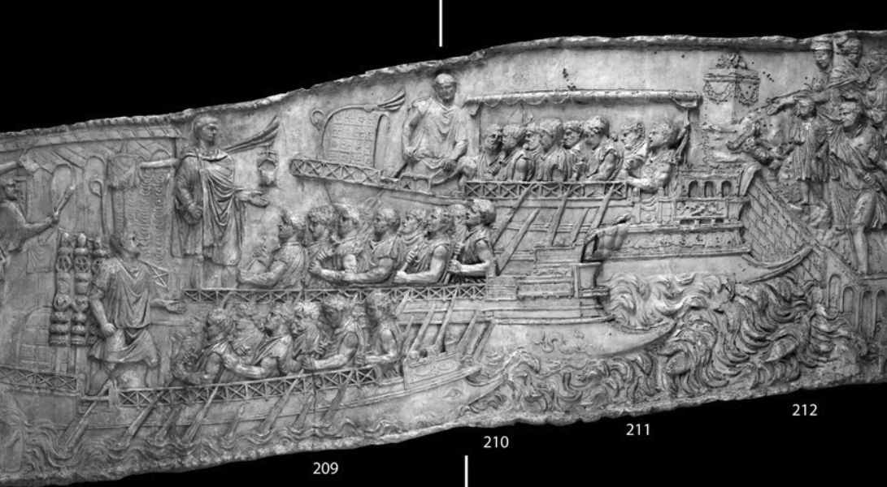
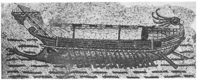
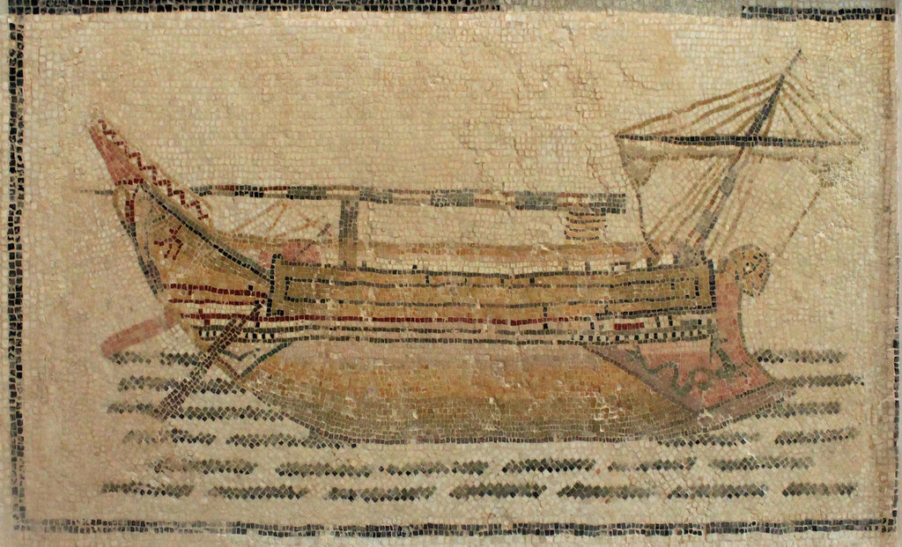

Ранее мы изучили использование тактического приема, предусматривающего подготовку галеры к бою. Но мачты рубили не только перед боем, но и в других случаях, например, перед заходом в порт или при длительном переходе на веслах при встречном ветре. Поэтому на галерах имелись соответствующие устройства для размещения убранных мачт и реев.
Мозаика III в. из Hadrumetum (близ Суса, Тунис). Музей г. Бардо.
Мы уже отмечали, что очень важна была готовность рангоута к быстрой постановке на штатное место в случае появления необходимости экстренного выхода из боя под парусами. Поэтому срубленная мачта помещалась так, чтобы ее основание (по-латински pes mali, или по-гречески πτέρνα - pterna), находилось поблизости от отверстия в палубе (пяртнерса) и гнезда мачты (степса, ἱστοπέδη - histopedē, иногда называли μεσόδμη – mesodmē или ληνός - lēnos), расположенного на киле (τρόπις - tropis).
Процесс постановки срубленной мачты на кораблях гомеровской эпохи описан в книге Снисаренко «Властители античных морей». Со ссылкой на книгу Casson Lionel. The Ancient Mariners. N. Y., 1959, с.38, Снисаренко пишет: «Сперва мачта вытаскивалась наверх двумя форштагами, устанавливалась в степс со стороны кормы бакштагом. Один парус со своим реем поднимался и устанавливался с помощью брасов, чтобы поймать ветер. Наветренный шкот устанавливался быстро, и рулевой занимал свое место с подветренным шкотом в одной руке и румпелем - прикрепленным к рулевому веслу брусом - в другой.» Некоторая неясность начала этой фразы уходит, если мы ознакомимся с текстом Л.Кассона: «First the mast was hauled up by two forestays, set in the mast-step, locked in with a wedge, and secured aft by a backstay. The one sail with its yard was hoisted and set by braces to catch the wind. The weather sheet was made fast, and the helmsman took his position with the leeward sheet in one hand and the tiller, a bar socketed into the steering oar, in the other.» Становится понятным, что установленная с помощью носовых штагов (по-гречески πρότονα - protona) мачта крепилась в степсе с помощью клиньев, после чего ее закрепляли с помощью одной кормовой оттяжки, бакштага (ἐπίτονος - epitonos). Наветренный шкот, конечно же, не «устанавливался быстро», а «жестко закреплялся» («was made fast»).
Убранный рангоут размещался на специальных стойках-кронштейнах: мачты – на ἱστοδόκη (histodokē) , реи – на καθορμεῖς (kathormeis).
Слово ἱστοδόκη хорошо известно со времен Гомера. В «Илиаде» мы читаем: ἱστὸν δ’ ἱστοδόκῃ πέλασαν προτόνοισιν ὑφέντες καρπαλίμως... («Мачту уложили на козлы, быстро ослабив шкоты…» ) Чтобы ясно было, о чем идет речь, приведем отрывок полностью:
οἳ δ᾽ ὅτε δὴ λιμένος πολυβενθέος ἐντὸς ἵκοντο
ἱστία μὲν στείλαντο, θέσαν δ᾽ ἐν νηῒ μελαίνῃ,
ἱστὸν δ᾽ ἱστοδόκῃ πέλασαν προτόνοισιν ὑφέντες
καρπαλίμως, τὴν δ᾽ εἰς ὅρμον προέρεσσαν ἐρετμοῖς.
С шумом легкий корабль вбежал в глубодонную пристань,
Все паруса опустили, сложили на черное судно,
Мачту к гнезду притянули, поспешно спустив на канатах,
И корабль в пристанище дружно пригнали на веслах.
(Пер. Гнедича)
Устройства для размещения срубленного рангоута можно видеть и на кораблях Римской империи. На Траянской колонне (114 г.) имеется изображение рея со свернутым парусом на высоких стойках –kathormeis.

На мозаике из Hadrumetum , которая помещена в начале поста, четко видна мачта, размещенная на histodokē .


Видимо, необходимость обеспечить беспреребойную работу гребцов, а также быстро рубить и восстанавливать рангоут, диктовала особенность стоячего такелажа мачт: как мы видели, ванты у кораблей гомеровской эпохи, да и в более поздний период, отсутствовали. Эту особенность такелажа у предшественников галер C.Torr в своей книге «Ancient ships» объясняет, правда, по другому: ванты отсутствали ввиду неукоснительного соблюдения традиций в древнем судостроении. Когда мачты на египетских кораблях имели две «ноги», ванты для их крепления в поперечном направлении не требовались: они, как уже упоминалось, крепились двумя форштагами и одним кормовым бакштагом, который подстраховывался двумя фалами при поднятых реях. Эта традиция сохранилась и после того, как мачты стали однодревками.
Не всегда рубили рангоут в море. Иногда, когда вступление в бой планировалось заранее, мачты оставляли на берегу, а в поход брали только небольшой парус, который должен был обеспечить быстрый отход в случае неблагоприятного исхода сражения. Если имелась возможность, то основные мачты и паруса перед боем могли отправить на береговую базу на судах обеспечения. Малый парус, который брали в бой, назывался акатий (ὰϰάτιον – akation). Его поднимали только в самом крайнем случае, когда сражение было проиграно и требовалось срочно выходить из боя. Выражение «поднять акатий» вошло в поговорку, означая "бежать от противника".